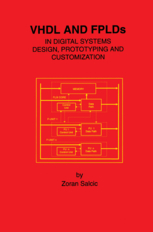
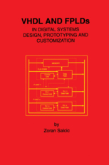

We provide digital circuit design training, digital system training, and digital signal processing trainning.
For digital circuit design training, we provide VHDL trainning. It is used to design Xilinx and Altera FPGA
and CPLD. Function simulation and timing simulation training are included. Besides this, test bench writing skill
trainning is provided.
For DSP taining, we provide TI DSP training and Lab. Simulator is the latest version which can simulate fixed point
and float point technology. In DSP lab, we provide basic skill practice and advanced signal processing practice such
as auto adaptive digital signal processing, complex blind signal detection etc.
For SOC trainning, we provide a completely new design methodology which help developers embed their prototype system
in a software reconfigurable chip. We provide training from basic concept to middle scaled WCDMA baseband processor.
and healthy ingredients.
Taking any one of trainings we provided, you will become very popular in market because each skill is hot skill. Your career life will change, your life style will change. No matter you are a just graduated student or a technician, you will become an experienced developer after the training.